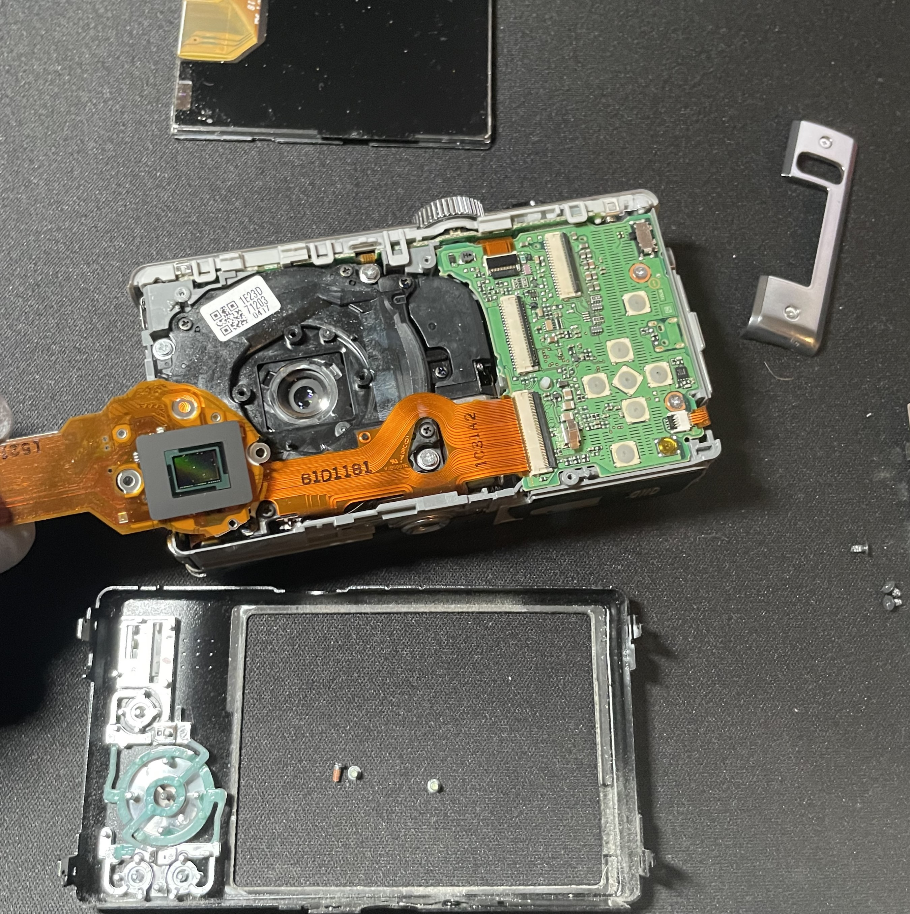

Panasonic ZS8 Sensor Cleaning
I've had this camera for a while, and it's picked up a lot of dust on the sensor over time. I finally took it apart to clean it, and ended up learning a lot more about compact camera repair than I expected.

Characterized contamination using flat field imaging (f6.3, ISO 100, 1/800, 14M) with a CFML36 CFL bulb, then stripped down to the sensor, removed the contaminants, and confirmed the fix using the same method.


My aunt gave me this camera years ago. The dust has been building up on the sensor over the years and I finally decided to do something about it. You can actually see it on the photo on the about page.
My first guess was that the sensor itself was the problem and looking into the camera model confirmed it. The lens system on this line is known for letting dust in. Before touching anything I took a baseline photo with specific settings so I'd have something to compare against later, then I found the schematics and started taking it apart.
Getting to the sensor meant working layer by layer, first the back cover, the LCD, and then the main board, disconnecting delicate ribbon cables along the way. I photographed everything each step just in case. Once I got to the sensor, I used a bike pump with a standard needle to blow the dust off.
Putting it back together was where things got complicated. On assembly, the camera's LCD screen stayed off and the lens would only move in small increments when I pressed the shutter button. My first instinct was that I had knocked something off of the circuit board when cleaning it. I couldn't find anything amiss when I looked over it with a magnifying glass so I just started over and reassembled everything. I got the same behavior as I did before.
I went back in and tried again. It turns out I hadn't fully seated the LCD ribbon cable the first time. It was a small enough discrepancy that I didn't notice it off of a glance, but it was enough to brick the whole camera.
My biggest mistake here was assuming that the camera could function without the LCD. Honestly, the reassembly issue ended up teaching me more than the cleaning and handling of delicate components. As it turns out, not having the LCD ribbon cable fully seated crippled the entire camera. These components were much more interconnected than I realized, and I'll be more careful about assuming any one part is isolated from the rest.